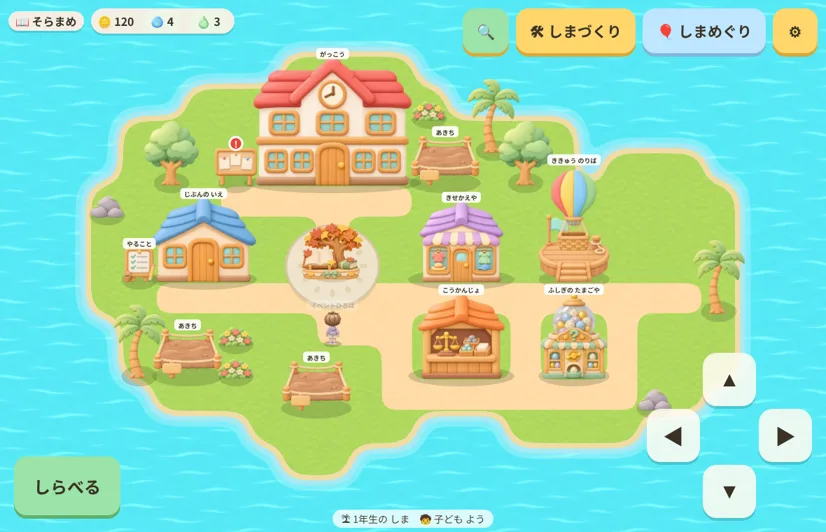
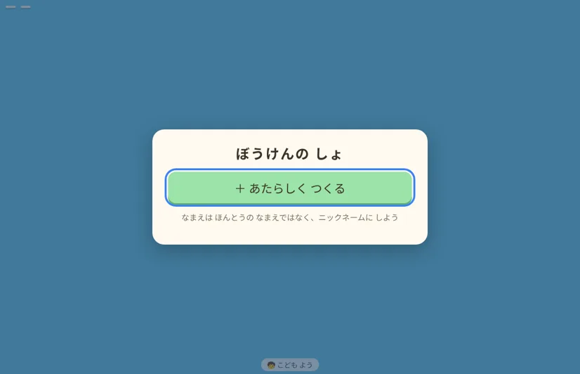
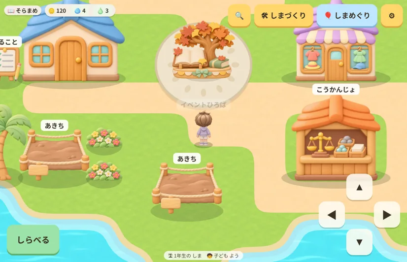
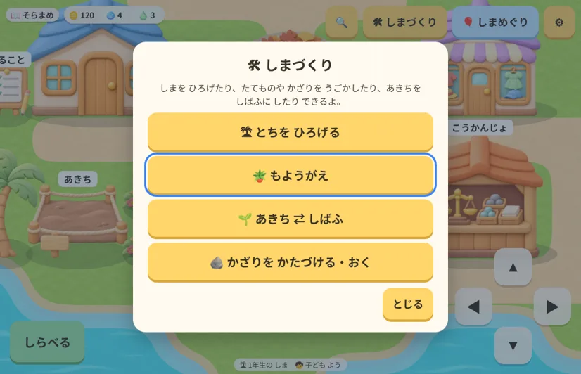
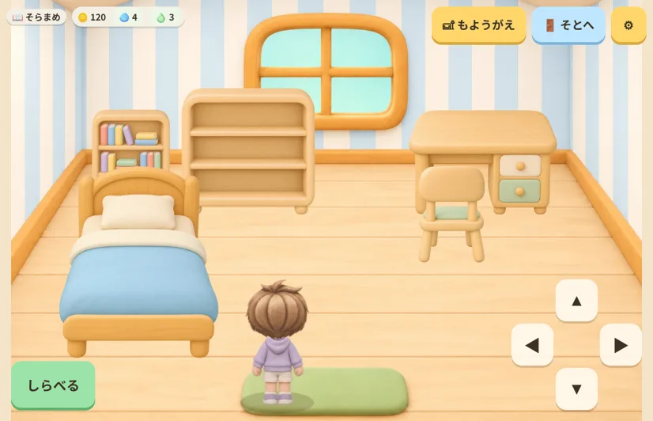

🏝 ハテナリアって なに？
ハテナリアは、じぶんだけの しまを そだてる 学しゅうの せかいです。
ききゅうに のって「さんすうの しま」や「りかの しま」へ いき、もんだいを とくと コインや そざいが もらえます。もらった もので、たてものを たてたり、へやに かぐを おいたり、ふくを きがえたり できます。

💡 べんきょうを がんばるほど、じぶんの しまが にぎやかに なっていくよ。
🚀 はじめかた
- ぼうけんの しょを つくる：なまえ（ニックネーム）を きめます。ほんとうの なまえは つかわないでね。1つの たんまつで 3人まで つくれます。
- 学年を えらぶ：じぶんの 学年を えらびます。
- しゅじんこうを えらぶ：かみがたや かみの いろを えらびます。
- クラスに 入る：先生から もらった リンクを ひらき、しゅっせき ばんごうと あいことば（4けたの かず）を 入れます。

🕹 うごきかた
タブレット・タッチで
いきたい ところを タッチすると、そこまで あるきます。がめんの ▲▼◀▶でも うごけます。たてものの まえで 「しらべる」を おすと 中に 入ったり、おみせを ひらいたり できます。
キーボードで
↑ ↓ ← → で あるく、Enter で しらべる・きめる、Esc で とじる・もどる。
💡 右上の 🔍 を おすと、しま ぜんたいを 見られるよ。
🗺 しまの ばしょ

先生が 出した しゅくだいを とけます。しゅくだいを 出すと ごほうびが もらえます。
先生からの おしらせや じかんわりが 見られます。
べんきょうの しまへ 出ぱつ！ 先生が よいと いったら、ともだちの しまも 見に いけます。
中に 入って、かぐを おいたり、かべと ゆかを かえたり できます。コインで へやを ひろげられます。
ふくや ぼうしを かったり、きがえたり できます。きせつの ふくも 出るよ。
そざいを ほかの そざいや コインに かえたり、つかわない ものを うったり できます。
ガチャけんで たまごを ひくと、めずらしい かぐや ふくが 出るかも！
そざいを つかって、すきな たてものを たてられます。しばふに する ことも できます。
まん中に、月ごとの かざり（モニュメント）が たちます。イベントの ときは クラスの みんなで もくひょうを めざします。
おうかんを あつめる ミッションが あります。
🪙 コインと そざい
もらえる とき
べんきょうの しまで もんだいを とくと、コインと、その きょうかの そざい（さんすうの いし、りかの しずく など）が もらえます。しゅくだいを 出したときも もらえます。
つかう とき
たてものを たてる・しまを ひろげる・かぐや ふくを かう・へやを ひろげる ときに つかいます。いろいろな きょうかの そざいが いるので、いろいろな しまで べんきょうしてね。

右上の 🛠 しまづくりで、とちを ひろげたり、たてものや かざりを うごかしたり できます。
🎉 おたのしみ
🎟 ガチャけん
しまで べんきょうした日と、しゅくだいを 出した日に、1まいずつ もらえます。「ふしぎの たまごや」で つかおう。
🏆 グランプリ
先生が ひらいた 日だけ、右上に「🏆 グランプリ」が 出ます。1ぷんで なんもん とけるか ちょうせん！ なんかいでも できて、いちばん よい きろくが のこります。
👫 ともだちの しま
先生が よいと いった ときだけ、ききゅう のりばから ともだちの しまを 見に いけます。見るだけで、ものを うごかしたり とったりは できません。すてきだったら「🌟 すてき！」を おくろう。
🛋 じぶんの へや

「🛋 もようがえ」で、かぐを うごかしたり、しまったり、かったり できます。
🤝 やくそく
- あいことばは ひみつ。ともだちにも おしえないでね。
- ほんとうの なまえや じゅうしょは 入れない。ニックネームを つかおう。
- じかんを きめて あそぼう。おうちの 人と やくそくした じかんを まもろう。
- ともだちの しまは やさしい 気もちで 見よう。人の しまの わる口は いわないよ。
- じゅぎょう中は 先生の はなしを よく きこう。
🆘 こまった ときは
- うごかない・へんな がめんに なった：がめんを よみこみなおして（ページの 上の ⟳）みよう。
- クラスに 入れない：しゅっせき ばんごうと あいことばを たしかめよう。なんかいも まちがえた ときは、すこし まってから もういちど ためしてね。
- きろくが きえないか しんぱい：きろくは その たんまつに のこります。ほかの たんまつでは つづきから できないので、いつも おなじ たんまつで あそぼう。
- それでも こまったら、先生に きいてね。